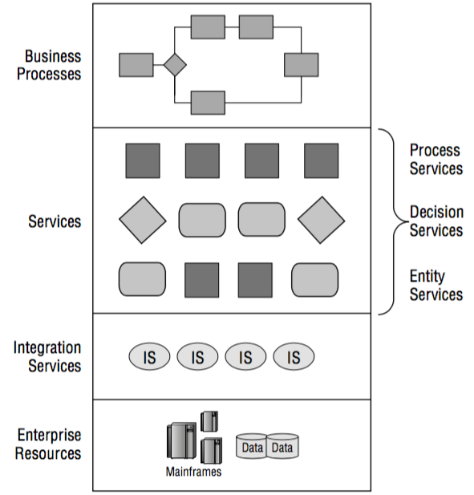
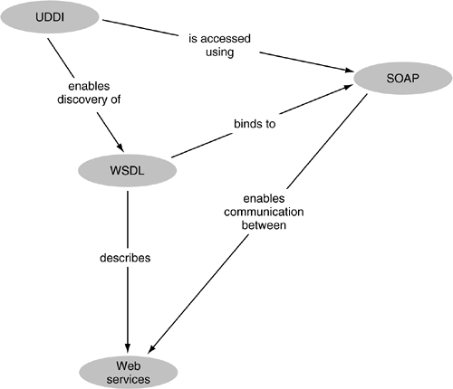

A organização fundamental de um sistema incorporado em seus componentes, as relações dos componentes interna e externa e os princípios orientadores da sua concepção e evolução.
SOA é um estilo arquitetural membro de algo maior (Computação Orientada a Serviço) que tem como foco principal os processos de negócios de uma organização

Atividade: Determinar uma arquitetura para um Processo de Negócio de uma Locadora de Veículos. Pense nos serviços, as entidades e os serviços de integração.
Exemplo: Um exemplo de alguns serviços derivados de um processo de Negócio "Solicitar Serviço de Fornecedor"
Processo Negócio: Solicitar Serviço de Fornecedor
===================================================
Processo de Serviço: Buscar Fornecedor
- - - - - - - - - - - - - - - - - - - - - - - - - -
Processo de Decisão: Fornecedor ativo? Fornecedor Parceiro?
- - - - - - - - - - - - - - - - - - - - - - - - - -
Serviço de Entidade: CRUD Serviço
===================================================
Serviço de Integração: Efetuar Pagamento
Tornou-se comum desenvolver SOA utilizando Web Services com os seguintes padrões:
Realiza a comunicação entre diferentes serviços.
exemplo de XML
http://www.w3schools.com/xml/note.xml
Padrão que define o formato das mensagens distribuidas.
<?xml version="1.0" encoding="utf-8"?> <soap12:Envelope xmlns:xsi="http://www.w3.org/2001/XMLSchema-instance" xmlns:xsd="http://www.w3.org/2001/XMLSchema" xmlns:soap12="http://www.w3.org/2003/05/soap-envelope"> <soap12:Body> <FahrenheitToCelsius xmlns="http://www.w3schools.com/xml/"> <Fahrenheit>77</Fahrenheit> </FahrenheitToCelsius> </soap12:Body> </soap12:Envelope>
Protocolo da camada de aplicação que tornou-se o protocolo padrão de transferência de dados na Internet.
Vamos trabalhar detalhadamente o protocolo HTTP.
Descreve o serviço e as interfaces por ele esperadas.
Exemplo de WSDL
http://www.w3schools.com/xml/tempconvert.asmx?WSDL
| Elemento | Descrição |
|---|---|
| <types> | Define os tipos de dadtos (XML Schema) usados pelo web service |
| <message> | define os elementos de dados p/ cada operação |
| <portType> | descreve as operações que podem ser realizadas. |
| <binding> | define o protocolo e o formato de dados para cada tipo de porta |
Conversor de WSDL em página Web legível
http://www.wsdl2html.com
Extensão para o Chrome que auxilia a extrair a requisição SOAP a partir do WSDL
Wizdler
Geração de código para o cliente a partir do WSDL
Utilizado como um diretório de serviços para descobrir e gerenciar os serviços implementados na rede.
